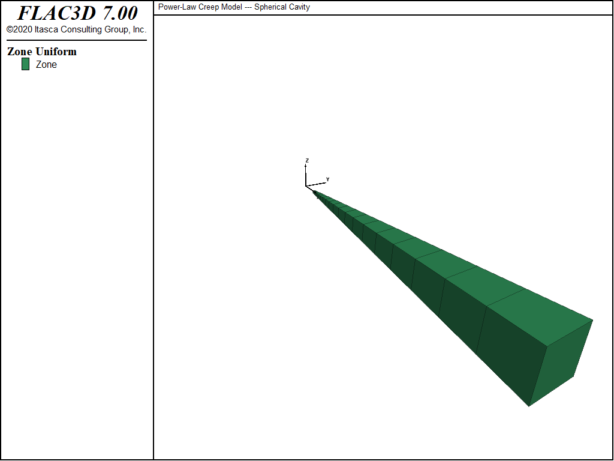
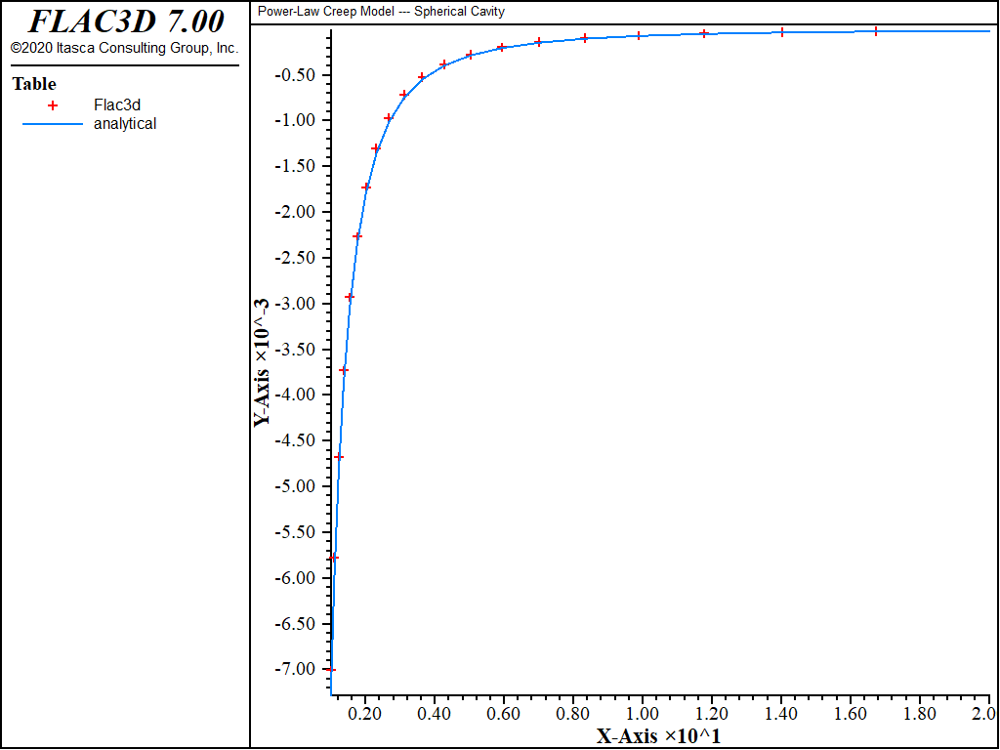
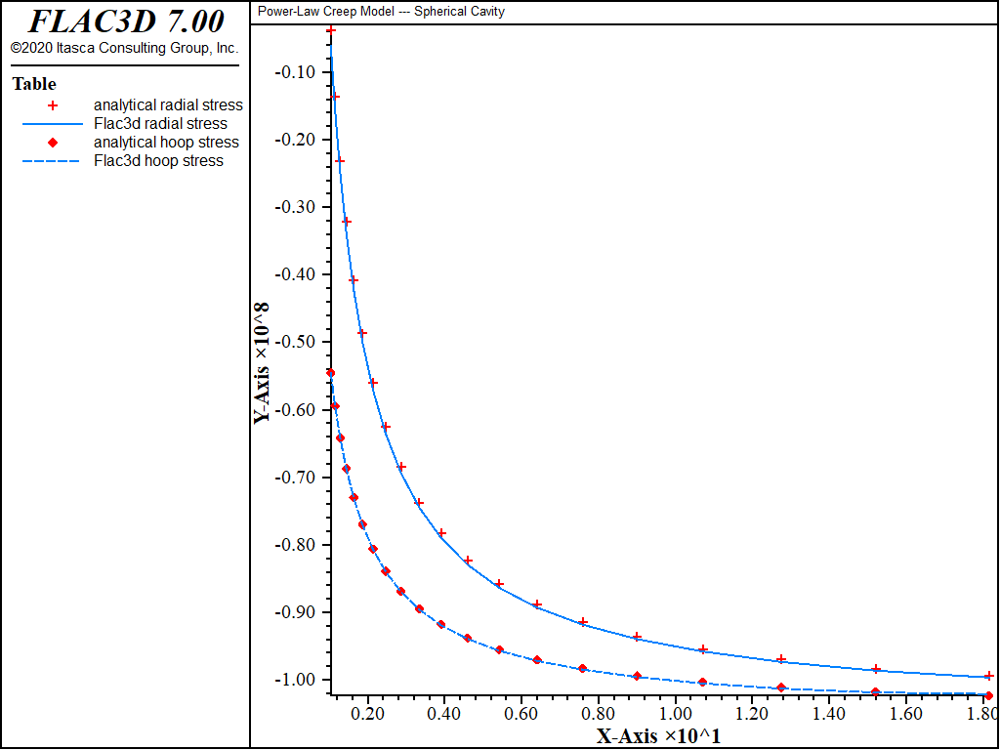
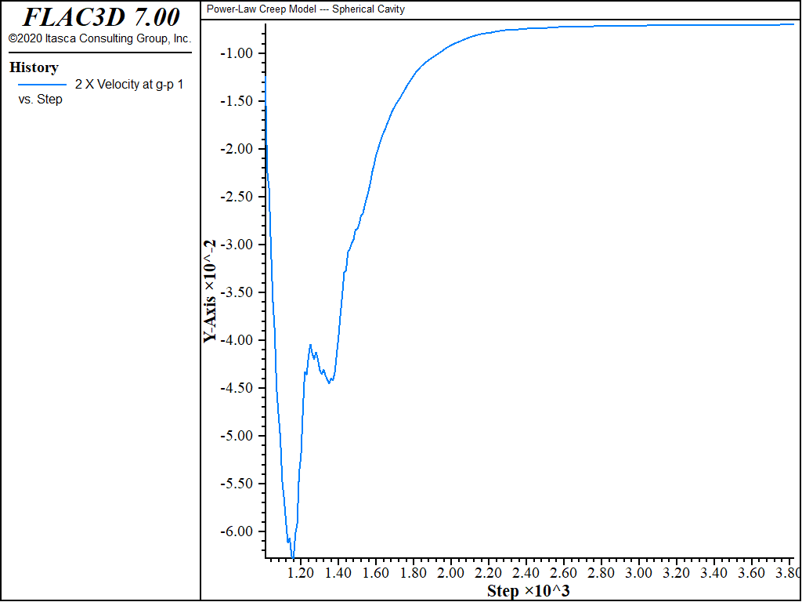
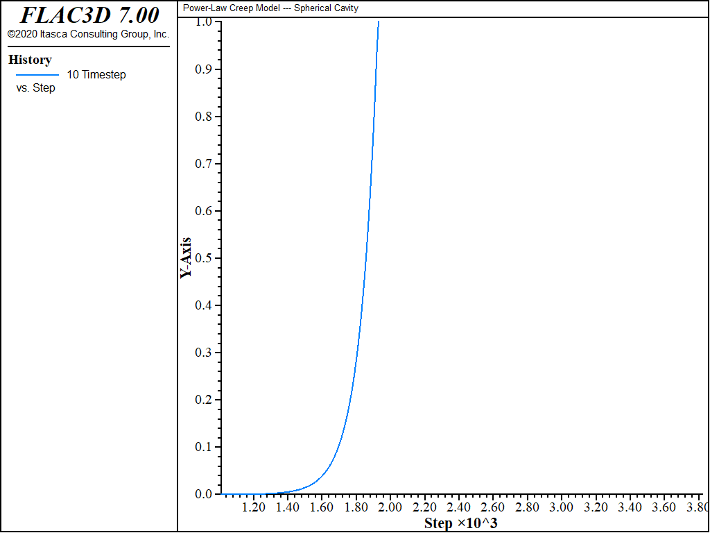

幂律模型：球形空腔
注意
要在 FLAC3D 中查看此项目，请使用菜单命令 。 选择“Creep/SphericalCavityPower”并选择“SphericalCavityPower.f3dprj”以加载。 该项目的主数据文件见本示例末尾（main data files）。
该问题与幂律模型：圆柱空腔（Power Model: Cylindrical Cavity）类似， 但涉及厚壁球体而非圆柱。球体外表面承受均匀压力。蠕变行为由单分量幂律描述，
解析解由 van Sambeek（1986）给出。径向压力和环向压力为
径向速度为
其中 \(P_0\) 和 \(P_i\) 为球体内、外表面的压力， \(a\) 和 \(b\) 分别为内半径和外半径。
该问题的 FLAC3D 网格示于 图 1（Figure 1）。 使用沿径向延伸的单排网格单元。内半径位于 \(a\) = 1 处，外 半径位于 \(b\) = 20 处。
网格点在两个环向均固定，只允许径向位移。 在外表面施加了 100 MPa 的压力。
材料特性为
| \(A\) | = | 1 × 10-7 MPa-3 yr-1 |
| \(n\) | = | 3 |
| \(E\) | = | 820 MPa |
| \(\nu\) | = | 0.3636 |


图 1：球形空腔试验的 FLAC3D 网格。
与圆柱空腔情况一样，假定初始应力状态为 100 MPa。
先达到弹性平衡，然后开始蠕变计算。
时步从小值（10-4）开始，并允许增大到由 设置蠕变最大时步（model creep timestep maximum） 设定的值。
结果汇总于 图 2（Figure 2） 至 图 5（Figure 5）。 图 2（Figure 2） 和 图 3（Figure 3） 比较了 FLAC3D 得到的径向速度以及径向应力和环向应力与解析值。


图 2：稳态时径向速度的比较——FLAC3D（符号）、解析解（线）与径向距离的关系。


图 3：稳态时径向应力和环向应力的比较——FLAC3D 径向应力（符号）、解析径向应力（线）、FLAC3D 环向应力（符号）、解析环向应力（线）与径向距离的关系。
空腔处径向速度和力学时步的历史分别示于 图 4（Figure 4） 和 图 5（Figure 5）。 观察到的行为与 幂律模型：圆柱空腔（Power Model: Cylindrical Cavity）中圆柱空腔模型所显示的行为类似。


图 4：球形空腔处径向速度的历史。


图 5：球形空腔试验的时步历史。
数据文件
;------------------------------------------------------------
; power-law.f3dat
; 球形空腔——幂律模型
;-------------------------------------------------------------------
model new
model large-strain off
fish automatic-create off
model title "Power-Law Creep Model --- Spherical Cavity"
model configure creep
zone create brick point 0 1 0 0 point 1 20 0 0 ...
point 3 0.98769 0.15643 0 point 6 19.754 3.129 0 ...
point 2 0.98769 0 -0.15643 point 4 19.754 0 -3.129 ...
point 5 0.97552 0.15643 -0.15451 ...
point 7 19.511 3.129 -3.090 ...
size 20 1 1 ratio 1.2 1 1
zone cmodel assign power
zone face skin
; 属性和应力采用帕斯卡单位（非 MPa）
zone property bulk=1e9 shear=3e8
zone property constant-1=1e-25 exponent-1=3
;
zone face apply velocity-normal 0 range group 'South'
zone face apply velocity-normal 0 range group 'North'
zone face apply velocity-normal 0 range group 'Bottom'
zone face apply velocity-normal 0 range group 'Top'
zone face apply stress-normal -100e6 range group 'East'
zone initialize stress xx -100e6 yy -100e6 zz -100e6
;
model creep active off
model step 1000
model save 'sph_1'
;
model history mechanical unbalanced-maximum
zone history velocity-x gridpointid 1
zone history velocity-x gridpointid 81
zone history displacement-x gridpointid 1
zone history displacement-x gridpointid 81
zone history stress-xx zoneid 1
zone history stress-yy zoneid 1
zone history stress-zz zoneid 1
model history creep time-total
model history timestep
;
zone gridpoint initialize velocity (0,0,0)
model creep active on
model creep timestep starting 1.0e-4
model creep timestep minimum 1.0e-4
model creep timestep maximum 1.0
;
model solve time-total 2000
model save 'sph_2'
;
program call 'AnalyticalSolution' ; 与解析解比较
table '1' label 'Flac3d'
table '11' label 'analytical'
table '2' label 'Flac3d radial stress'
table '12' label 'analytical radial stress'
table '3' label 'Flac3d hoop stress'
table '13' label 'analytical hoop stress'
model save 'power_law'
program return
| 这些内容对您有帮助吗？… | FLAC3D © 2019, Itasca | 原文更新于 2020 年 10 月 8 日 |